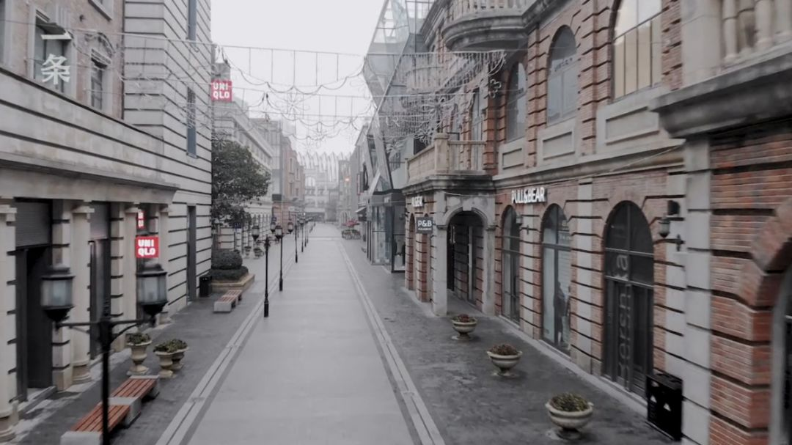
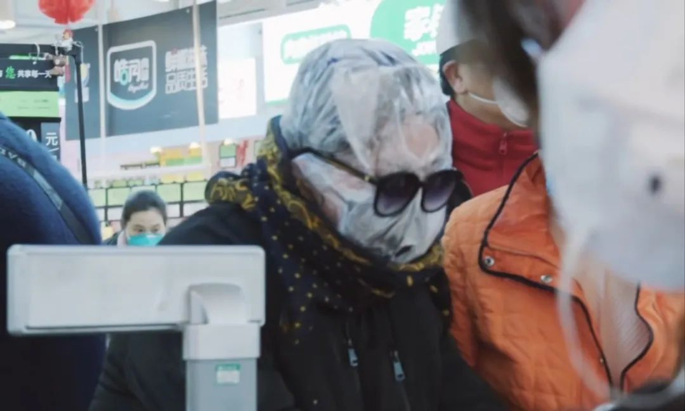
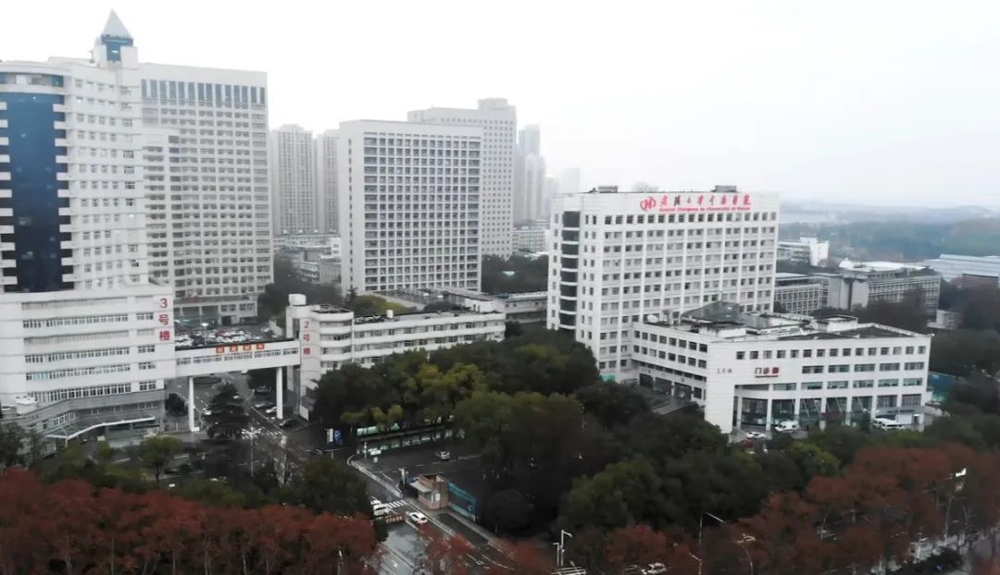

封城之后的武汉，都在这部纪录片里了
原文链接 备份链接 非常时期 他们的存在是照亮黑暗的光在武汉坚守工作岗位的普通人 户外探险队志愿者大象，打开后备箱，打开一个水果罐头，将糖水一饮而尽。 1月23日武汉封城，1月26日，武汉实行中心城区机动车禁行管理，出租车停运，医护人员的 …
1月23日凌晨，除夕前夜，武汉宣布交通封城。如果没有这场疫情，丹丹现在已经到了河南，和事先从当阳赶来的姐姐在一起。
这是她计划已久的旅行。因为工作忙，假期少，按照惯例，丹丹过去几年都选择在春节期间出去旅游。
20号那天，丹丹收到了前同事，一位在协和医院上班的护士发来的消息，告诉她，此次疫情严重，出去旅游有风险。再三考虑后，她和姐姐达成了一致，按下了机票和酒店订单上的「立即取消」。
2月25号，丹丹接受了我们的线上采访，这是她从1月23号以来，在家隔离的第33天。
前 夜
2020年1月21号，武汉市政府宣布封城的前两天，丹丹依旧像往常一样去公司上班。和上班一样平常的，还有武汉地铁拥挤的早高峰。「乘客依旧很多，只有一小部分人戴上了口罩。因为网上有消息说有疫情，但是并没有官宣，所以大多数人和我一样，也就没放在心上。」短短两天的时间，1月23号，也就是农历大年二十九，武汉在这一天正式宣布封城。

昔日热闹繁华的武汉步行街（楚河汉街)
图源@林晨同学Hearing
丹丹每年都会趁着年假出去玩，今年也不例外。为了这次河南之行，她和姐姐早早就筹备好了。买票、订酒店、做攻略，一切准备工作都已就绪。如果不是这场疫情，丹丹会和事先从当阳赶来的姐姐会合，再一同坐车前往河南。出发前夕，在协和医院工作的朋友告诉她，这次的疫情好像「有点严重」，但这在那时并没有让她打消出行的想法。「封城的前两三天，我朋友再次发消息告诉我，让我别出去玩了，她也已经把原本买好要去庐山的票都退了，说这次情况『特别严重』，出去会有『很大风险』。」丹丹这才有些担心，把情况告诉姐姐后，两人最终决定取消行程，今年的旅行也就此作罢。
「新闻上刚开始通报华南海鲜市场出现疫情的时候，同事告诉我准备去药店买一些口罩备着，问我要不要，我还笑着说『钢铁女侠是不需要口罩的』」。
当这一切正渐渐被来势汹汹的疫情所淹没，意识到疫情的严重性之后，丹丹逐渐变得谨慎。「一直到封城前我都没戴过口罩。每天早上去单位值班的时候，地铁、公交上挤满了人，戴口罩的并不多，包括我，街上也只有一部分人戴了。不过万幸没有被感染。对于疫情的重视程度这一块，我是属于非常迟钝的那一类人。」后来和家里人说起这些经历的时候，丹丹觉得自己真的太幸运了。

超市入口排队测体温的顾客
图源@林晨同学Hearing
「作为一个武汉本地人，感觉武汉在防疫措施上确实是比其他地区的行动要晚很多。」丹丹的姐姐所在的当阳是宜昌下辖的一个县级市，据她说，「那里的防疫措施行动要比武汉还早上三四天」，加上后来在网上看见河南面对疫情采取处理措施的情况，丹丹还是觉得，面对疫情，相较之下武汉的重视程度差了许多。
隔 离
封城之后，武汉各个地方都限制人员出入，包括丹丹家所在的小区。因为事先没有准备，突如其来的限制措施打乱了丹丹一家的生活节奏。「小区从什么时候开始封禁我也记不太清楚了，大概一开始的时候是可以进出的，因为我们家买东西一次会买一星期的量，所以家里人也不怎么出去。后来小区发了一张表格，上面写着允许每户三天派出去一个人采购生活用品，我也就赶紧去领了表，出门又买了一次需要的东西。」
那次的采购让丹丹心惊胆战。「第一次去小区对面中百购物的时候，前面排的队很长，大家都比较自觉，人与人之间的距离也隔得比较远。」超市的工作人员不停地出来喊要保持安全距离，进超市之前也会先测体温。但在选购完东西排队称重的时候，人们还是挤在了一起。「那个场景形容起来就是，我的脸贴在别人的后背，别人的脸又贴到我的后背，整个队伍就像一条贪吃蛇。我很害怕。」

武昌区市民在超市采购物资
图源@林晨同学Hearing
从那时起，曾经当过护士的丹丹开始警觉到，日常生活已经需要调整到「一级戒备状态」了。「到家之后，我会把所有的东西都会放在门口消毒，最后再给自己身上喷一遍酒精，包括鞋底，鞋子是坚决不会放进家里的，这让我有一种回到以前进手术室的感觉，对所有物品的消毒都要达到最严格的标准。」
隔离刚开始那阵子，偌大的武汉买不到一瓶酒精，更别说口罩。「有一次委托社区买酒精，质量堪忧。一瓶500毫升的酒精25块钱，差不多有两瓶矿泉水那么多，出乎意料地便宜，可我打开的时候闻到的分明是一股很重的高度白酒的味道……很无奈，却也只能将就着用。」尽管已经过去一个月，这些防疫必需品依然紧缺。丹丹告诉我们，现在她的家里只剩六个口罩了，所以每次都得节约着用，不会为了特地去买一样东西而戴个口罩出门，必须要列好购物清单，出一次门都会一次性把需要的东西买完，尽量把一个口罩的作用发挥到最大。

超市里用塑料袋套头，满头大汗的大妈
图源@林晨同学Hearing
能出去的机会不多，可家里总是要生活的，一些吃的东西还是很缺，她跟妈妈尝试通过各种渠道购买物资。因为配送名额稀少，刚开始在盒马生鲜上抢了三四次都没抢到。「疯狂程度堪比双十一。」丹丹笑着说。「后来业主群里有人分享了抢购的方法，按照他的方式做了之后才买到了。那次买了差不多八百块钱的东西，起码可以吃到三月中旬了。」
下好单了，等待骑手送货来的时间也很煎熬，晚点是常有的事。「因为是两批订单，中途回家消毒的话又很麻烦，还得再重新换一个口罩，所以就一直在楼底下等，那天足足等了快四个小时才拿到东西。」

志愿者们在小区外发放蔬菜
图源网络
家里的菜只够吃一天了。「社区里面也有团购买青菜什么的，但是有人在业主群里吐槽说买的菜送回来都是烂的，而且照片看起来确实不尽人意。后来实在没办法，还是托志愿者去买了一些东西。差不多两百块钱的蔬菜，缺斤少两不说，本来两斤的东西我回家一称只有一斤多一点；价格还比平时贵了一倍不止。有什么法子呢？特殊时期，有得吃就不错了。」丹丹说完，无奈地叹了口气。
「不光是买不到菜，就算运气好抢到了，自己出去取也很不方便。」丹丹家所在小区里有通行证的志愿者会帮业主们去提菜，但也不会送到家门口，而是放在一个固定的地方。小区的自提点在马路对面，走过去需要十分钟左右的时间，菜价比平时贵了一倍多，每笔订单还要额外付30块钱的费用给代购。

疫情期间还在送餐的外卖小哥
图源@林晨同学Hearing
丹丹很喜欢吃鱼，那一阵在家里每天都念叨着要吃鱼。但疫情时期，这已然是一种奢望。「有一次晚上做梦竟然都梦见和同事一起捉鱼吃，现在想起来自己都觉得不可思议。」
心 火
1月22号，丹丹发了一条朋友圈，她说，「想去报名志愿者」，配图是她当年考取的护士执业证书。

丹丹的朋友圈照片
武汉疫情爆发最严重的时候，看着新闻媒体上每天滚动更新的头条，丹丹回想起了五年前在医院大小科室间辗转忙碌的日子。当时的她还是武汉某医院一名普通的护士。
虽然已离职多年，但她清楚地知道，这个时候医护资源有多么紧缺。于是，去做志愿者的念头就这样萌发了。「我联系了在医院的好朋友，给她说了想去做志愿者的想法。她告诉我当时有一个去红十字会当志愿者的机会，主要负责的工作就是接电话，联系捐赠物资之类的事情。」但是因为红十字会离家比较远，加上那段时间交通停运，天气变化莫测，自己也没有私家车，两地来回通勤是一个大问题，这成为了她当时最大的顾虑。
丹丹打算征求妈妈的意见。「刚开始她很支持，还问我需要老年人吗？她也想去。我心里暗暗高兴，觉得妈妈很理解我。」后来，当妈妈从电视新闻里了解到疫情越来越严重，尤其是看到那些生离死别的场景……到最后，丹丹把招募通知拿给妈妈看的时候，她的态度发生了180度的变化，「说什么去了之后肯定要很长时间，不是一天两天，而且女孩子去也会很累之类的话。」经不起妈妈的旁敲侧击，想到自己走了之后，家里只剩下她一个人，如果自己出了事，那她怎么办？再加上公司的事也渐渐多了起来，丹丹最终还是放弃了去做志愿者的机会。
帮不上忙，但每天看着新闻报道中新增病例的数字蹭蹭往上涨的时候，她也很关心以前医院同事的近况。她们虽然不在一线，但日益严峻的疫情还是给她们的工作增添很多困难。「刚开始交通封禁的时候，他们也没有办通行证之类的东西，就只能每天住附近的酒店或者和租房的同事住在一起。上班需要穿防护服，但工作的时候几乎不能喝水，因为穿脱一次需要花费很长时间，也会有让细菌进去的风险。」

武汉大学中南医院
图源@林晨同学Hearing
丹丹说，身边一个很好的朋友怀疑感染了病毒，就去做了核酸测验，虽然结果是好的，但是之后还需要二次复查才能确认。朋友的妈妈为了求得好结果，甚至拿着孩子的生辰八字去求大仙，算是求一种心灵的寄托。「其实他说这句话的时候，我觉得是挺幽默的。人在无助到极点的时候，可能会觉得只有上天才能保佑自己吧。」
后 记
据武汉3月10日下午3点半发来的最新消息，最后一批49名患者从洪山体育馆走出，运行了35天的武汉市首个方舱医院正式休舱。至此，武汉14家方舱医院全部休舱。
丹丹说，现在武汉已经可以预约口罩了，酒精也能买得到，生鲜物资的供应渠道多了起来，不再需要激烈地抢购了，三八节在淘宝下单的快递也陆续收到了。当然，她终于可以吃到她想吃的鱼了。
春已至，武汉的樱花即将进入盛开期。

武大盛开的樱花
图源网络
待到樱花盛放时，我们再相会。
原文链接 备份链接 非常时期 他们的存在是照亮黑暗的光在武汉坚守工作岗位的普通人 户外探险队志愿者大象，打开后备箱，打开一个水果罐头，将糖水一饮而尽。 1月23日武汉封城，1月26日，武汉实行中心城区机动车禁行管理，出租车停运，医护人员的 …
原文链接 备份链接 1月23日凌晨2点的一纸封城令，让留在这个城市的900万人，不得不承受封城的集体共命。处境和遭遇的不同，让同一片封城的天空下，生发出千万种不同的生活。 当大多数武汉人以家庭为单位防御新冠的时候，还有一些少数派，以异乡者 …
原文链接 备份链接 武汉已从阻击战转为反击战。欧洲疫情迅速蔓延，单日新增近千 2020年2月26日，在马来西亚雪邦，从武汉撤回的马籍民众抵达当地机场机场。图/ 法新 文 |《财经》数据研究员徐进 图 |《财经》视觉中心 编辑 | 郝洲 …
原文链接 备份链接 经过这次疫情，我对《我不是药神》这部电影感触特别深。我明白了平时物资储存的重要性，这样在特殊时期才能派上大用场。 口述 | 赵 勐 整理 | 王仲昀 我叫赵勐，干物流行业的。大年初一下午，我一个人在家睡觉。醒来看到微信 …
原文链接 备份链接 武汉水系多，长江汉水交汇，划分出武汉三镇。江水浩荡，码头就多，拼码头靠什么？靠“斗狠”。武汉的汉正街在江边，过去全国各地的小商贩来打货，江边有很多做苦力的“扁担”，与重庆棒棒一样，帮小老板们用扁担挑子来运货，靠苦力 …